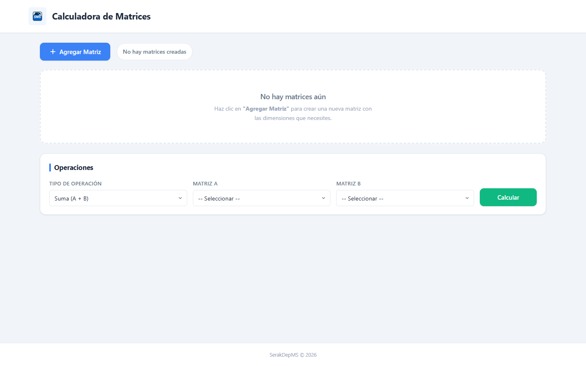
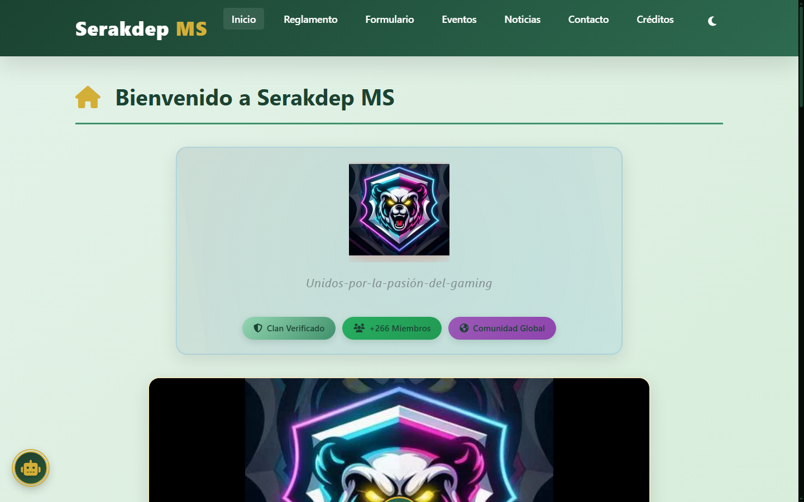
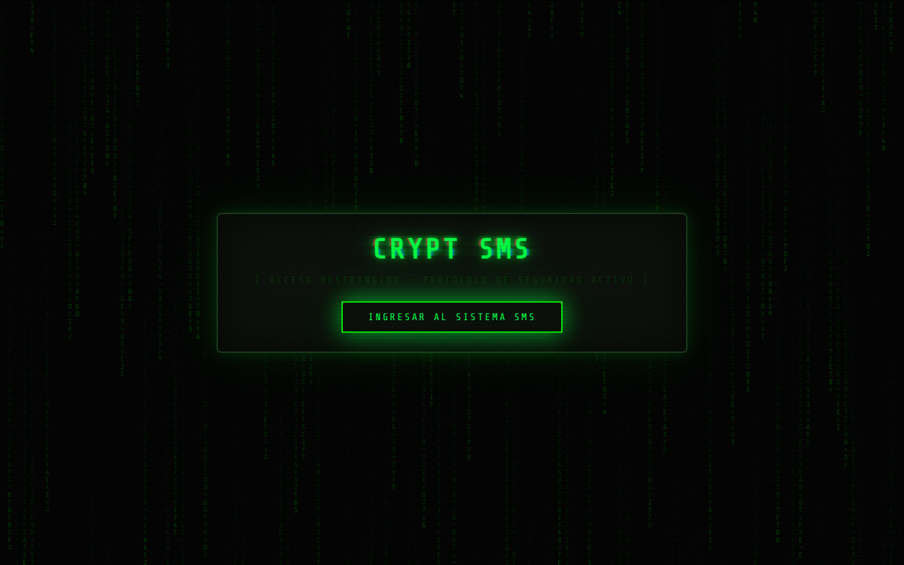

Hi, I'm SerakDepMS
FULL STACK DEVELOPER
Software Engineer and Computer Science Student. Passionate about building scalable applications and using software as a solution for every problem.
About me
Who Am I
I am a Full Stack Developer with extensive knowledge across multiple programming domains. Currently learning Computer Science and Software Engineering, I am proficient in both Frontend and Backend development with deep understanding of modern frameworks. Always learning new things, I love using software as a solution for every problem.
Engineering Philosophy
"Using software as a solution for every problem, driven by clean code, continuous learning, and robust architectural design."
Roadmap
Academic & Engineering Journey
Advanced Full Stack & Software Engineering
Desarrollo de aplicaciones escalables, gestión avanzada de bases de datos y despliegue en entornos cloud.
Computer Science Studies
Profundización en estructuras de datos, algoritmos complejos, arquitecturas de software y control de sistemas.
Multi-Domain Systems & 130+ OS Mastery
Investigación y dominio cruzado de más de 100 distribuciones Linux, entornos Unix/BSD y arquitecturas móviles.
Deep Dive
Systems & Architecture Passions
130+ Operating Systems
Investigación profunda de núcleos, gestión de memoria y optimización a nivel de bajo nivel en más de 100 distribuciones Linux, entornos Unix/BSD y arquitecturas móviles.
Code Optimization & Research
Análisis riguroso de rendimiento, concurrencia y diseño de arquitecturas robustas orientadas a la máxima eficiencia del software.
Multi-Paradigm Programming Ecosystem
Capabilities
Technical Expertise & Tools
Programming Languages
Proficient across multiple paradigms: C, C++, JavaScript/TypeScript, Java, Python, Dart, Go, Ruby, PHP, Swift, Rust, Kotlin, Scala, Elixir, C#, and more.
Frontend Development
React, Angular, Vue.js, Svelte, Next.js, Nuxt.js, Gatsby, HTML5, CSS3, Webpack, Vite, Redux, Tailwind, Sass.
Backend & APIs
Node.js, Express, Python (Django, Flask, FastAPI), Java (Spring Boot), PHP (Laravel), Go (Gin, Echo), Rust (Actix, Rocket), GraphQL, gRPC.
Databases & Storage
PostgreSQL, MySQL, MongoDB, Redis, Firebase, Cassandra, Elasticsearch, SQLite, MariaDB.
DevOps & Cloud
Docker, Kubernetes, AWS, Azure, GCP, CI/CD (GitHub Actions, Jenkins), Terraform, Nginx, Apache, Kafka, RabbitMQ.
Operating Systems (130+)
Deep cross-system mastery across 100+ Linux distributions, mobile architectures (Android/iOS ROMs), Windows systems, and Unix/BSD environments.
Portfolio
Popular Repositories


